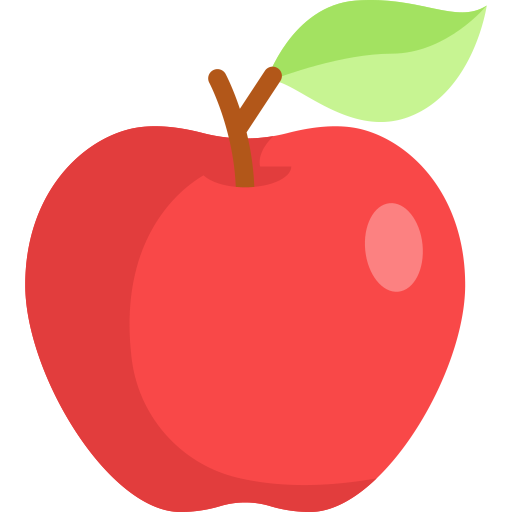
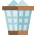

<!DOCTYPE html>
<html lang="ru">
    <meta charset="UTF-8">
    <meta name="viewport" content="width=device-width, initial-scale=1.0">
    <meta http-equiv="X-UA-Compatible" content="ie=edge">
    <title>Двоичное Дерево Поиска</title>
    <link rel="stylesheet" href="style.08d6bd83e5c0c00aec90.css">
</html>
<body>
    <div class="page-wrapper">
        <div class="page">

            <header class="header">
                <button class="header__menu-button"></button>
                <menu class="menu">
                    
                    <div class="menu__options">
                        <button class="menu__button menu__button_option">Создать дерево...</button>
                        <button class="menu__button menu__button_option">Сохранить конфигурацию</button>
                        <button class="menu__button menu__button_option">Загрузить конфигурацию...</button>
                    </div>
                    <div class="menu__suboptions">
                        <button class="menu__button menu__button_suboption">Пустое</button>
                        <button class="menu__button menu__button_suboption">Случайное</button>
                        <button class="menu__button menu__button_suboption">Худший случай</button>
                        <button class="menu__button menu__button_suboption">Средний случай</button>
                        <button class="menu__button menu__button_suboption">Лучший случай</button>
                    </div>
                </menu>
                <a class="header__link" href="#">Как пользоваться</a>
                <h1 class="header__title">Двоичное дерево поиска</h1>
                <div class="header__languages">
                    <a class="header__lang header__lang_current" href='./index.html'>Ru</a>
                    <a class="header__lang" href="#">En</a>
                </div>
            </header>

            <main class="content">
                
                <section class="upper-toolbar">
                    <div class=avl>
                        <div class="avl__status">
                            
                            <h4 class="avl__status-message">Дерево несбалансировано</h4>
                            <button class="avl__balance-button">Сбалансировать</button>
                        </div>
                        <div class="avl__switch-state">
                            <div class="switch">
                                <div class="switch__rectangle"></div>
                                <div class="switch__circle"></div>
                            </div>
                            <h4 class="avl__title">AVL-Дерево</h4>
                        </div>
                    </div>
    
                    <div class="tasks-list">
                        
                        <div class="task">
                            <button class="task__button">
                                Операции обхода дерева
                                
                            </button>
                            <div class="task__container task__container_traversal">
                                <button class="task__option">
                                    
                                    Inorder traversal
                                </button>
                                <button class="task__option">
                                    
                                    Preorder traversal
                                </button>
                                <button class="task__option">
                                    
                                    Postorder traversal
                                </button>
                            </div>
                        </div>
    
                        <div class="task">
                            <button class="task__button">
                                Дополнительные операции
                                
                            </button>
                            <div class="task__container task__container_additional-ops">
                                <button class="task__option">
                                    
                                    Поиск минимума
                                </button>
                                <button class="task__option">
                                    
                                    Поиск максимума
                                </button>
                                <button class="task__option">
                                    
                                    Поиск следующего элемента
                                </button>
                                <button class="task__option">
                                    
                                    Поиск предыдущего элемента
                                </button>
                            </div>
                        </div>
    
                        <div class="task">
                            <button class="task__button">
                                Задачи
                                
                            </button>
                            <div class="task__container task__container_problems">
                                <button class="task__option task__option_problems">
                                    
                                    Проверка дерева на принадлежность к двоичным деревьям поиска
                                    </button>
                                <button class="task__option task__option_problems">
                                    
                                    Поиск максимального двоичного дерева поиска
                                    </button>
                                <button class="task__option task__option_problems">
                                    
                                    Восстановление дерева по результату обхода Preorder traversal
                                    </button>
                            </div>
                        </div>
                    </div>
    
                    <a href="https://github.com/jellythefish/binary_search_tree" target="_blank" class="github-link">
                        <h2 class="github-link__title">View on github</h2>
                        
                    </a>
                </section>

                <section class="middle-part">
                    <div class="canvas">
                        <svg id="canvas" width="1440px" height="660px"></svg>
                    </div>

                    <div class="basic-operations">
                        <h3 class="basic-operations__title">Основные операции</h3>
                        <p class="basic-operations__avl-status">(AVL)</h4>
                        <div class="basic-operations__operation">
                            
                            <input type="number" class="basic-operations__input basic-operations__input_leaf">
                            <h4 class="basic-operations__operation-title basic-operations__operation-title_leaf">Вставить вершину</h4>
                        </div>
                        <div class="basic-operations__operation">
                            
                            <input type="number" class="basic-operations__input basic-operations__input_apple">
                            <h4 class="basic-operations__operation-title basic-operations__operation-title_apple">Найти вершину</h4>
                        </div>
                        <div class="basic-operations__operation">
                            
                            <h4 class="basic-operations__operation-title basic-operations__operation-title_cross">Удалить вершину</h4>
                        </div>
                        <button class="basic-operations__button basic-operations__button_open"></button>
                    </div>


                    <div class="theory">
                        <div class="theory__content"></div>
                        <button class="theory__button"></button>
                    </div>

                    <div class="pseudocode">
                        <button class="pseudocode__button"></button>
                    </div> 

                </section>

                <section class="lower-toolbar">

                    <button class="clear-button">
                        <h4 class="clear-button__title">Очистить</h4>
                        
                    </button>

                    <div class="time-control">
                        <div class="time-control__panel">
                            <div class="time-control__speed">
                                <h5 class="time-control__speed-title">Скорость</h5>
                                <div class="time-control__speed-switch">
                                    <div class="time-control__speed-line"></div>
                                    <div class="time-control__speed-pointer"></div>
                                </div>
                            </div>
                            <div class="time-control__buttons">
                                
                                
                                
                                
                                
                            </div>
                        </div>
                        <div class="time-control__timeline">
                            <div class="time-control__timeline-line"></div>
                            <div class="time-control__timeline-pointer"></div>
                        </div>
                    </div>

                </section>
            </main>
        
        </div>
    </div>
    <script src="./vendor/snap.svg-min.js"> </script> 
    <script type="application/javascript" src="main.d884637cf0951cd9e5eb.js"></script>
</body>